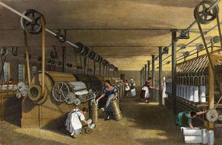

Introdução
A Revolução industrial foi um conjunto de mudanças que aconteceram na Europa nos séculos XVIII e XIX. A principal particularidade dessa revolução foi asubstituição do trabalho artesanal pelo assalariado e com o uso das máquinas. Até o final do século XVIII a maioria da população europeia vivia no campo e produzia o que consumia. De maneira artesanal o produtor dominava todo o processo produtivo. Apesar de a produção ser predominantemente artesanal, países como a França e a Inglaterra, possuíam manufaturas. As manufaturas eram grandes oficinas onde diversos artesãos realizavam as tarefas manualmente, entretanto subordinados ao proprietário da manufatura.
A Inglaterra foi precursora na Revolução Industrial devido a diversos fatores, entre eles: possuir uma rica burguesia, o fato do país possuir a mais importante zona de livre comércio da Europa, o êxodo rural e a localização privilegiada junto ao mar o que facilitava a exploração dos mercados ultramarinos. Como muitos empresários ambicionavam lucrar mais, o operário era explorado sendo forçado a trabalhar até 15 horas por dia em troca de um salário baixo. Além disso, mulheres e crianças também eram obrigadas a trabalhar para sustentarem suas famílias. Diante disso, alguns trabalhadores se revoltaram com as péssimas condições de trabalho oferecidas, e começaram a sabotar as máquinas, ficando conhecidos como “os quebradores de máquinas“. Outros movimentos também surgiram nessa época com o objetivo de defender o trabalhador. O trabalhador em razão deste processo perdeu o conhecimento de todo a técnica de fabricação passando a executar apenas uma etapa.
Primeira fase
Entre 1760 a 1860, a Revolução Industrial ficou limitada, primeiramente, à Inglaterra. Houve o aparecimento de indústrias de tecidos de algodão, com o uso do tear mecânico. Nessa época o aprimoramento das máquinas a vapor contribuiu para a continuação da Revolução.
Segunda fase
A segunda etapa ocorreu no período de 1860 a 1900, ao contrário da primeira fase, países como Alemanha, França, Rússia e Itália também se industrializaram. O emprego do aço, a utilização da energia elétrica e dos combustíveis derivados do petróleo, a invenção do motor a explosão, da locomotiva a vapor e o desenvolvimento de produtos químicos foram as principais inovações desse período.
Terceira fase
Alguns historiadores têm considerado os avanços tecnológicos do século XX e XXI como a terceira etapa da Revolução Industrial. O computador, o fax, a engenharia genética, o celular seriam algumas das inovações dessa época.